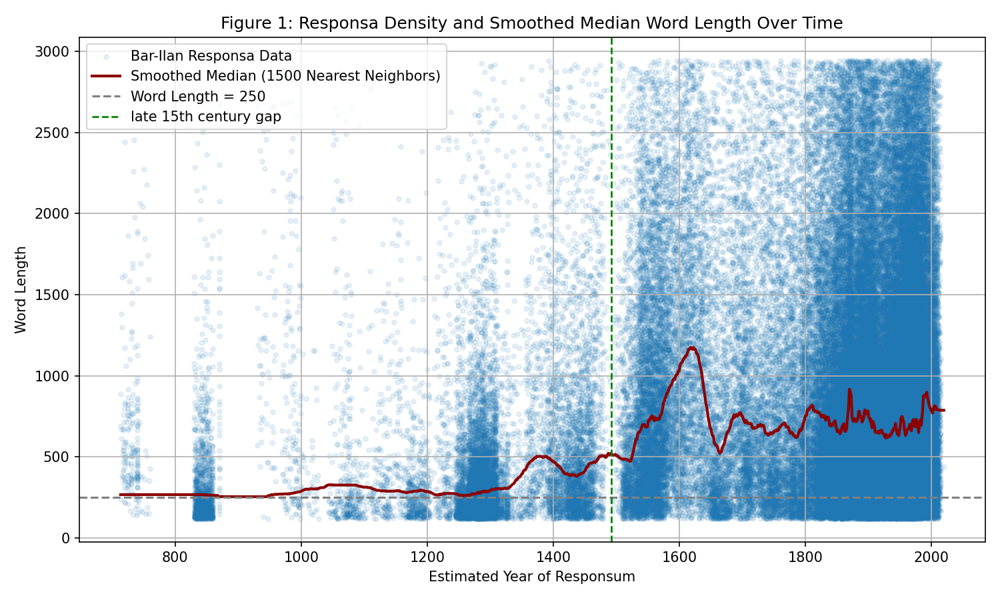
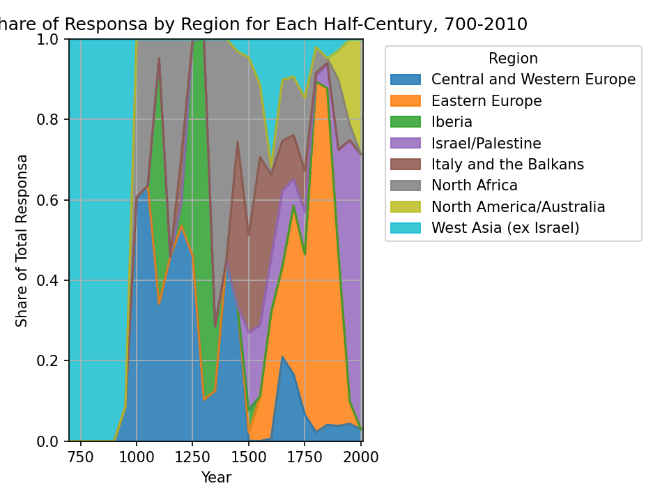

AJS Review (forthcoming)
Responsa form a legal tradition spanning at least 1,300 years, unmatched in its continuity and global reach. We present the first large-scale empirical analysis of over 130,000 responsa from the Bar-Ilan Responsa Project, one of the world's largest digital repositories of Jewish legal texts. We confirm longstanding scholarly claims that responsa have generally increased in length over time and vary across regions. We also uncover novel patterns: a striking contraction in responsa activity in the late fifteenth century, supporting the traditional division of responsa between Rishonim ("Early Authorities") and Acharonim ("Later Authorities"); a sharp rise and fall in responsa length during the early modern period; and the surprising absence of length differentials between Eastern European Rishonim and their contemporaries elsewhere. These findings shed light on how halakha adapts to historical, technological, and institutional change.


All data (metadata only — no full responsa text) and analysis code are in this repository.
pip install -r requirements.txt python scripts/01_build_dataset.py python scripts/02_summary_statistics.py python scripts/03_figures.py python scripts/04_regressions.py
Full pipeline, from raw Bar-Ilan metadata to every figure and table.
Browse the repository →What reproduces exactly, and two small corrections found while rebuilding the pipeline.
Read the notes →